Chapter 56: Expert listening aur reading¶
Écoute experte
C1 par aap words samajhte ho. Ab chunauti wo hai jo kahi nahi gayi: columnist ki awaaz me chhupi irony, wo concession jo asal me inkaar hai, aur ek hi baatcheet me sambhal kar boli French se tez slang me badal jaana. Poori speed ki paanch recordings — ek debate, ek lecture, ek column, ek literary text aur doston ki baatcheet — aapko sirf content nahi, rawaiya (attitude) sunna sikhayengi.
Sirf facts nahi, attitude ke liye suno
Is level par sawaal hote hain “Speaker sochta kya hai?” aur “Uska matlab kya hai?” — “Usne kya kaha?” nahi. Jawab tone, register aur connectors me hota hai.
56.1 Poori speed par notes lena¶
DALF me aur university me aap paanch ya das minute tak koi bolta rahe aur aap notes lete ho. Poore sentences likh nahi sakte. Key words, symbols aur arrows likho, aur speaker ke shuru karne se pehle page ko organise kar lo.

| Likho | Matlab |
|---|---|
| ↑ / ↓ | augmente, hausse / baisse, recul |
| → / ← | entraîne, donc / vient de, à cause de |
| ≠ / = | contraire, opposé / c’est, équivaut à |
| pb, qqn, qqch | problème, quelqu’un, quelque chose |
| bcp, tjs, svt | beaucoup, toujours, souvent |
| gvt, pol., éco. | gouvernement, politique, économie |
| -tion → ° | situation → situa°, population → popula° |
Noun, verb se tez hote hain
Jo sunte ho use nouns me badal do: « la pollution recule » → ↓ pollution; « on a fermé la rue » → fermeture rue. Isi ko nominalisation kehte hain — dekho Nominalisation & formal style.
56.2 Lines ke beech padhna — chhupa matlab, irony, register¶
French baatcheet understatement aur irony se bhari hoti hai. Ek C1 listener ko pata hona chahiye ki “ce n’est pas mal” tareef hai aur “bravo” shikayat bhi ho sakta hai. Sur (melody) madad karta hai: irony aksar sapaat, dheemi ya badha-chadha kar boli hoti hai.
- Ce n’est pas mal du tout. — Litotes: “bilkul bura nahi hai” = ye sach me bahut achha hai.
- Il n’est pas très doué pour la diplomatie. — “Bahut hunarmand nahi hai” = usme tact nahi hai. Negative ek kadwe faisle ko naram kar deta hai.
- Bravo, c’est malin ! — Irony: “Shabaash, bada hoshiyaar hai!” = ye to bewakoofi thi.
- Il ne manquait plus que ça ! — Bas yahi kasar baaki thi! — jab ek aur museebat aa jaye tab kehte hain.
- Je ne vous le fais pas dire. — “Main aapse ye bulwa nahi raha” = aapne kah diya — main poori tarah sehmat hoon.
- Selon nos informations, le ministre aurait démissionné. — Khabar hai ki minister ne istifa de diya. Conditional = abhi confirm nahi hua.
- Ce n’est pas rien. — “Ye kuch nahi hai, aisa nahi” = ye sach me badi uplabdhi hai.

Register: ek idea, teen level¶
| Soutenu | Courant | Familier |
|---|---|---|
| un ouvrage | un livre | un bouquin |
| une automobile | une voiture | une bagnole |
| Je prends congé. | Je pars. | Je me casse. |
| C’est éprouvant. | C’est fatigant. | C’est crevant. |
| Je l’ignore. | Je ne sais pas. | Je sais pas. |
Register bhi message ka hissa hai
Jo speaker achanak register badalta hai wo aapko kuch bata raha hai: upar jaana (je l’ignore) doori ya thandak jodta hai; neeche aana (ça me saoule) emotion ya apnaapan dikhata hai. Dekho Registers & slang.
56.3 Le débat radio — la voiture en ville¶
Shaam ka ek radio debate: kya city centres se cars hata deni chahiye? Ek urban planner iske favour me hai, shopkeepers’ association ka head sceptical hai. Dono tameez se bolte hain — isliye asahmati concessions aur subjunctives me chhupi hai. Upar ke template se notes lo.
| Français | Matlab |
|---|---|
| franchir le pas | himmat karke kadam uthana |
| se réapproprier l’espace public | public jagah par wapas haq jamana |
| les transports en commun | public transport |
| les livraisons | deliveries |
| se passer de | ke bina kaam chalana |
| quant à | rahi baat… ki |
| la clientèle | customers (saamoohik) |
| une ville apaisée | shaant, kam traffic wala shehar |
- ▶ Part 1 — Claire Morel, urbaniste — Uski position teen words me note karo, aur wo do conditions jo wo maanti hai.
- ▶ Part 2 — Patrick Garnier, commerçant — Wo kya maanta hai? Kis cheez se inkaar karta hai? “je veux bien” ka tone suno.
Transcript
— Bonsoir à tous. Faut-il chasser la voiture des centres-villes ? Pour en débattre, Claire Morel, urbaniste, et Patrick Garnier, qui préside une association de commerçants. Claire Morel, vous êtes favorable à une interdiction totale ?
— Totale, non, mais progressive, oui. Regardez les villes qui ont franchi le pas : la pollution recule, le bruit diminue, et les habitants se réapproprient l’espace public. Il est temps que nous cessions de considérer la rue comme un parking. Bien sûr, il faudra que les transports en commun suivent et que les livraisons soient organisées autrement. Mais c’est une question de santé publique, pas d’idéologie.
— Patrick Garnier, vous n’êtes manifestement pas convaincu.
— Pas vraiment, non. Personne ne conteste qu’il faille réduire la pollution. Mais qu’on ne vienne pas nous dire que tout le monde peut se passer de sa voiture ! Allez expliquer ça à une infirmière qui habite à trente kilomètres et qui finit son service à minuit. Quant aux commerces, quand on a fermé notre rue à la circulation, nous avons perdu près d’un tiers de notre clientèle en un an. Alors, la ville apaisée, je veux bien, à condition que ce ne soit pas une ville réservée à ceux qui peuvent se le permettre.
Hinglish translation
— Sabko namaskar. Kya city centres se car ko hata dena chahiye? Is par behas ke liye hamare saath hain urban planner Claire Morel, aur Patrick Garnier, jo shopkeepers’ association ke president hain. Claire Morel, kya aap poori pabandi ke favour me hain? — Poori nahi, dheere-dheere, haan. Un shehron ko dekhiye jinhone ye kadam utha liya: pollution ghat raha hai, shor kam ho raha hai, aur log public jagah par wapas haq jama rahe hain. Ab waqt aa gaya hai ki hum sadak ko parking ki tarah dekhna band karein. Bilkul, public transport ko saath dena hoga aur deliveries ko alag tareeke se organise karna hoga. Lekin ye public health ka sawaal hai, ideology ka nahi.
— Patrick Garnier, aap saaf taur par convince nahi hain. — Zyada nahi, nahi. Koi inkaar nahi karta ki pollution kam karna zaroori hai. Lekin koi hamein ye na bataye ki har koi apni car ke bina kaam chala sakta hai! Ye jaakar us nurse ko samjhaiye jo tees kilometre door rehti hai aur jiski shift aadhi raat ko khatam hoti hai. Rahi dukaanon ki baat: jab hamari sadak traffic ke liye band hui, hamne ek saal me lagbhag ek tihayi customers kho diye. To shaant shehar, theek hai, is shart par ki wo sirf unke liye na ho jo ise afford kar sakte hain.
Notes¶
- Il est temps que nous cessions de considérer la rue comme un parking. — Il est temps que + subjunctive: action ka bulawa, “hamein chahiye” se zyada zordaar.
- Personne ne conteste qu’il faille réduire la pollution. Mais… — Pehle maano, phir hamla karo: “Koi inkaar nahi karta… lekin…”. Qu’on ne vienne pas nous dire = gusse ka subjunctive: “Koi hamein ye na bataye…”.
- La ville apaisée, je veux bien, à condition que… — Yahan Je veux bien ek mann maar kar di gayi haan hai. Asli message à condition que ke baad aata hai: ameeron ke shehar ka darr.
Dhyan do
- Galat: Bien qu’il est d’accord sur le principe, il refuse.
- Sahi: Bien qu’il soit d’accord sur le principe, il refuse.
- Kyun: bien que, à condition que, il est temps que ke baad hamesha subjunctive aata hai (dekho The subjunctive).
56.4 La conférence — l’Académie française¶
Ek chhota university lecture. Lectures ek mamle me debates se aasaan hote hain: speaker plan khud batata hai. Signposts pakdo — dans un premier temps, j’en viens maintenant à, autrement dit — aur aapke notes ka dhaancha taiyaar hai.
| Français | Matlab |
|---|---|
| dans un premier temps | sabse pehle (signpost) |
| avoir pour mission de | ka kaam hona |
| la devise | motto, aadarsh vaakya |
| élu(e) à vie | zindagi bhar ke liye chuna gaya |
| la question qui fâche | wo chubhta hua sawaal |
| seulement voilà | par baat ye hai ki |
| contraignant(e) | bandhankaari (binding) |
| normatif / normative | niyam tay karne wala |
- ▶ Part 1 — origins — Note karo: plan (2 hisse), saal, sthapak, members ki sankhya.
- ▶ Part 2 — aaj — Lecturer ka nishkarsh kya hai? Kya wo poori tarah aalochak hai?
Transcript
Bonjour à toutes et à tous. Aujourd’hui, je voudrais vous parler d’une institution que le monde entier nous envie — ou dont il se moque, selon les cas : l’Académie française. Dans un premier temps, nous verrons d’où elle vient ; dans un second temps, nous nous demanderons à quoi elle sert aujourd’hui. Fondée en 1635 par le cardinal de Richelieu, l’Académie avait pour mission de donner à la langue des règles certaines, et de la rendre pure et éloquente. Ses quarante membres, que l’on surnomme les Immortels — en référence à la devise « À l’immortalité » —, sont élus à vie.
J’en viens maintenant à la question qui fâche : à quoi sert l’Académie au XXIe siècle ? Elle rédige un dictionnaire, dont la première édition date de 1694, et elle publie des recommandations sur le bon usage. Seulement voilà : ces avis n’ont aucune valeur contraignante. Autrement dit, ce n’est pas l’Académie qui fait la langue, ce sont ceux qui la parlent. Il a d’ailleurs fallu attendre 1980 pour qu’une femme, Marguerite Yourcenar, y soit élue. Son rôle est donc aujourd’hui plus symbolique que normatif — ce qui, après tout, n’est pas rien.
Hinglish translation
Sabko namaskar. Aaj main ek aisi sanstha ke baare me baat karna chahta hoon jis par poori duniya ko ya to hamse jalan hoti hai — ya wo uska mazaak udati hai, halaat ke hisaab se: Académie française. Pehle hum dekhenge ki wo kahaan se aayi; phir poochhenge ki aaj wo kis kaam ki hai. 1635 me Cardinal Richelieu dwara sthapit, Académie ka kaam bhasha ko pakke niyam dena aur use shuddh aur prabhaavshaali banana tha. Iske chaalis members, jinhe “Immortals” kaha jaata hai — motto “À l’immortalité” ke hawale se — zindagi bhar ke liye chune jaate hain.
Ab main us chubhte sawaal par aata hoon: 21vi sadi me Académie kis kaam ki hai? Wo ek dictionary likhti hai, jiska pehla edition 1694 ka hai, aur sahi istemaal par sifarishein chhapti hai. Par baat ye hai ki in sifarishon ki koi bandhankaari keemat nahi hai. Yaani bhasha Académie nahi banati — use bolne wale banate hain. Waise bhi, 1980 tak intezaar karna pada tab jaakar ek aurat, Marguerite Yourcenar, ise chuni gayi. To aaj iski bhoomika niyam banane se zyada pratikaatmak hai — jo, aakhir me, koi chhoti baat nahi.
Notes¶
- … une institution que le monde entier nous envie — ou dont il se moque. — Khud par hansne wala humour: lecturer andha prashansak nahi hai. que / dont dekho — ek line me do relative pronouns.
- Autrement dit, ce n’est pas l’Académie qui fait la langue. — Autrement dit = “doosre shabdon me”: mukhya idea ko dobara kaha ja raha hai. Iske baad kya aata hai use hamesha note karo.
- … ce qui, après tout, n’est pas rien. — Ant me ek litotes: nishkarsh santulit hai, negative nahi.
Dhyan do
- Galat: Après qu’elle soit élue, elle a prononcé un discours.
- Sahi: Après qu’elle a été élue, elle a prononcé un discours.
- Kyun: Niyam ke mutabik après que ke baad indicative aata hai (ghatna asli hai). Avant que ke baad subjunctive. Bol-chaal me “après qu’elle soit” sunai dega — exam me bachna.
56.5 La chronique — éloge de l’ennui¶
Subah ka ek opinion column, radio par zor se padha gaya. Columnists sunne ke liye likhte hain: chhoti ironic exclamations, lambe sundar sentences, abstract nouns (la disparition de, le refus de) aur subjunctives. Raay shuru me kabhi seedhi nahi kahi jaati — use infer karna padta hai.
| Français | Matlab |
|---|---|
| un temps mort | khaali waqt, thaharav |
| le désœuvrement | khaali baithe rehna |
| à force de + inf. | baar baar karte rehne se… |
| loin de moi l’idée de | mera ye irada bilkul nahi ki |
| jouer les donneurs de leçons | pravachan dena, naseehat jhaadna |
| dégainer | (hathiyaar) nikaalna — yahan, phone |
| qu’on le veuille ou non | chahe hum chahein ya na chahein |
- ▶ Part 1 — nidaan — Kya “Quel progrès !” sachchi tareef hai? Columnist ke hisaab se humne kya kho diya?
- ▶ Part 2 — salah — Columnist pravachan jaisa lagne se kaise bachta hai? Aakhri twist kya hai?
Transcript
Il paraît que nous ne savons plus nous ennuyer. Dans la file d’attente, dans le métro, au feu rouge même, le téléphone surgit au moindre temps mort. Quel progrès ! Nous voilà enfin débarrassés de ces minutes vides où il ne se passait rien… sinon, peut-être, une pensée. Car c’est bien là le problème : la disparition de l’ennui n’est pas sans conséquences. Les psychologues le répètent : c’est dans le désœuvrement que naissent bien des idées, et c’est à force de regarder par la fenêtre que l’enfant finit par inventer des histoires.
Loin de moi l’idée de jouer les donneurs de leçons : je suis le premier à dégainer mon téléphone dès que l’ascenseur tarde. Mais il faudrait que nous réapprenions à supporter l’attente, avant que la moindre seconde d’inactivité ne nous devienne insupportable. Qu’on le veuille ou non, le refus de l’ennui est aussi un refus de la lenteur, et donc de la réflexion. Alors, la prochaine fois que vous attendrez le bus, laissez votre téléphone dans votre poche. Vous risquez de vous ennuyer. C’est précisément le but.
Hinglish translation
Lagta hai hum ab bore hona bhool gaye hain. Line me, metro me, red light par bhi, zara sa khaali waqt mila nahi ki phone nikal aata hai. Kya tarakki hai! Aakhirkaar hum un khaali minuton se chhoot gaye jab kuch nahi hota tha… siwaye shayad ek vichaar ke. Kyunki asli problem yahi hai: bore hone ka khatam ho jaana be-asar nahi hai. Psychologists dohrate hain: bahut se idea khaali baithe rehne me paida hote hain, aur khidki se bahar takte rehne se hi bachcha kahaaniyaan gadhne lagta hai.
Mera irada bilkul naseehat dene ka nahi: jaise hi lift der kare, phone nikaalne wala main sabse pehla hoon. Lekin hamein intezaar sehna dobara seekhna hoga, isse pehle ki nishkriyata ka zara sa pal bhi hamare liye asahniya ho jaye. Chahe hum chahein ya na chahein, bore hone se inkaar ka matlab dheemepan se inkaar bhi hai — aur isliye soch-vichaar se bhi. To agli baar jab bus ka intezaar karo, phone jeb me hi rehne do. Ho sakta hai aap bore ho jao. Yahi to maqsad hai.
Notes¶
- Quel progrès ! Nous voilà enfin débarrassés… — Antiphrasis: columnist ka matlab ulta hai. Suraag agli line me hai: “siwaye shayad ek vichaar ke”.
- La disparition de l’ennui n’est pas sans conséquences. — Nominalisation (la disparition) + litotes (pas sans = iske gambhir nateeje hain).
- … avant que la moindre seconde d’inactivité ne nous devienne insupportable. — avant que + subjunctive, sundar “expletive” ne ke saath — ye negative nahi hai.
Expletive ne
avant que, à moins que, de peur que ke baad aur comparisons me (plus difficile qu’on ne le pense), formal French ek ne jod deti hai, pas ke bina. Iska matlab “nahi” nahi hota. Ise negative samajh lene se matlab ulta ho jaata hai.
56.6 Le texte littéraire — le passé simple à l’oreille¶
Audiobooks aur literature programmes passé simple use karte hain, jo likhi hui kahaani ka tense hai. Aapko ise bolna nahi hai, par turant pehchanna zaroor hai. Yahan 19vi sadi ke classic style me ek original passage hai, phir pehchanne ke liye do mashhoor public-domain opening lines. Poore forms ke liye dekho Literary & formal French.
| Aap sunte ho | Infinitive | Matlab |
|---|---|---|
| elle atteignit | atteindre | wo pahunchi |
| elle s’arrêta | s’arrêter | wo ruk gayi |
| elle hésita | hésiter | wo hichkichayi |
| la porte céda | céder | darwaza khul gaya (jhuk gaya) |
| elle comprit | comprendre | wo samajh gayi |
| il fut · il eut · il vint | être · avoir · venir | wo tha · uske paas tha · wo aaya |
- ▶ Le retour (original passage) — Sunte hue verbs ko chhaanto: actions passé simple me, background imparfait me.
Transcript
Le soir tombait lorsque Mathilde atteignit enfin le village. La pluie avait cessé, mais une brume épaisse montait de la rivière et noyait les toits dans une lumière grise. Elle s’arrêta devant la maison de son enfance. Les volets étaient clos ; le jardin, autrefois si soigné, n’était plus qu’un fouillis d’herbes folles. Elle hésita longtemps, la main sur la grille froide. Puis elle poussa la porte, qui céda avec un gémissement. Une odeur de poussière et de cire la saisit. Rien n’avait changé : la pendule, sur la cheminée, marquait toujours cinq heures. Mathilde comprit alors que le temps, dans cette maison, s’était arrêté le jour de son départ.
Hinglish translation
Shaam dhal rahi thi jab Mathilde aakhirkaar gaanv pahunchi. Baarish ruk chuki thi, par nadi se ghani dhundh uth rahi thi aur chhaton ko ek dhoosri roshni me dubo rahi thi. Wo apne bachpan ke ghar ke saamne ruk gayi. Khidkiyon ke pat band the; baagh, jo kabhi itna saaf-suthra hota tha, ab sirf jangli ghaas ka jhurmut ban chuka tha. Wo der tak hichkichayi, haath thande gate par rakhe. Phir usne darwaza dhakela, jo kara-hati hui awaaz ke saath khul gaya. Dhool aur mom ki gandh ne use jakad liya. Kuch nahi badla tha: chimney par rakhi ghadi ab bhi paanch baja rahi thi. Mathilde tab samajh gayi ki is ghar me waqt uske jaane ke din hi ruk gaya tha.
Do mashhoor lines jinhe pehchanna hai¶
- « Demain, dès l’aube, à l’heure où blanchit la campagne, / Je partirai. » — Victor Hugo, Les Contemplations (1856). “Kal, subah hote hi, jab khet-khalihaan safed ho jaate hain, main nikal padoonga.” Inversion où blanchit la campagne dekho — verb subject se pehle, ek kaavyamay aur formal aadat.
- « Longtemps, je me suis couché de bonne heure. » — Marcel Proust, Du côté de chez Swann (1913). “Bahut dinon tak, main jaldi so jaata raha.” Mashhoor isliye hai ki upanyas passé simple ke bajaye passé composé se shuru hota hai.
Dhyan do
- Galat: Puis elle poussait la porte, qui céda.
- Sahi: Puis elle poussa la porte, qui céda.
- Kyun: Puis ghatnaon ki kadi me nayi ghatna laata hai: passé simple. Imparfait manzar ke liye hai (le soir tombait).
Dhyan do
- Galat: Il venit le lendemain.
- Sahi: Il vint le lendemain.
- Kyun: venir, tenir aur unke parivaar ke passé simple -in- me hote hain: il vint, ils vinrent; il tint, ils tinrent.
56.7 La conversation rapide — entre potes¶
Ab doosra chhor: do dost ek film par baat kar rahe hain, tez aur relaxed. Real spoken French ki har cheez yahan hai — ne nahi, t’as, y a, bah, quoi, bref, du coup jaise fillers — aur humour jo aapko context se pakadna hai.
| Aap sunte ho | Standard / matlab |
|---|---|
| t’as vu ? | tu as vu ? — kya tumne dekha? |
| j’ai pas trop accroché | mujhe zyada pasand nahi aayi / mann nahi laga |
| je dis pas | wo maanta hoon |
| c’est n’importe quoi | bakwaas hai |
| un mec | ek banda |
| kiffer (j’ai trop kiffé) | bahut pasand karna (mujhe bahut pasand aaya) |
| t’es dur | tum kathor ho rahe ho |
| c’est pas faux | baat to sahi hai (aksar mazaak me) |
- ▶ La conversation (fast) — Film kisko pasand aayi? Ek dost sahi se rai kyun nahi de sakta?
Transcript
— Alors, t’as vu le dernier film de Lucas ?
— Ouais, hier soir. Franchement, j’ai pas trop accroché.
— Ah bon ? Pourtant, tout le monde dit que c’est génial !
— Bah, les images sont belles, je dis pas. Mais l’histoire, c’est n’importe quoi. Y a un mec qui disparaît au milieu, on sait jamais pourquoi… Bref, deux heures et demie, quoi.
— T’es dur, là. Moi, j’ai trop kiffé la fin.
— Ouais, enfin, la fin, je l’ai un peu ratée : je m’étais endormi.
— Non ! T’es sérieux ? Bon, ben du coup, t’as pas le droit de donner ton avis !
— C’est pas faux.
Hinglish translation
— To, Lucas ki latest film dekhi? — Haan, kal raat. Sach kahoon to mujhe zyada pasand nahi aayi. — Achha? Par sab to kehte hain ki zabardast hai! — Arre, visuals sundar hain, wo maanta hoon. Par kahaani bakwaas hai. Beech me ek banda gaayab ho jaata hai, kabhi pata hi nahi chalta kyun… Khair, dhai ghante ki, samjhe. — Tum thoda kathor ho rahe ho. Mujhe to climax bahut pasand aaya. — Haan, par climax… wo to mujhse thoda chhoot gaya: main so gaya tha. — Nahi! Sach me? Phir to tumhe rai dene ka koi haq nahi! — Baat to sahi hai.
Notes¶
- Bref, deux heures et demie, quoi. — Chhupa matlab: “bahut zyada lambi”. Faisla kabhi kaha nahi gaya — bref… quoi aur tone kaam kar dete hain.
- La fin, je l’ai un peu ratée : je m’étais endormi. — Dislocation (la fin, je l’ai…) topic ko pehle rakhti hai — bol-chaal ki khaasiyat. ratée, l’ = la fin ke saath agree karta hai.
- C’est pas faux. — Mazaakiya concession: wo maanta hai ki uske paas koi asli dalil nahi. Phir se understatement.
Dhyan do
- Galat: (oral exam) Bah, j’ai pas trop accroché à cette thèse, quoi.
- Sahi: Je ne suis pas entièrement convaincu par cette thèse.
- Kyun: Familiar register samjho; par exam, interview ya presentation me standard French par wapas aao.
À retenir: yaad rakho
- Is level par sawaal hote hain “Speaker sochta kya hai?” aur “Uska matlab kya hai?” — “Usne kya kaha?” nahi. Jawab tone, register aur connectors me hota hai.
- Jo sunte ho use nouns me badal do: « la pollution recule » → ↓ pollution; « on a fermé la rue » → fermeture rue. Isi ko nominalisation kehte hain — dekho Nominalisation & formal style.
- Jo speaker achanak register badalta hai wo aapko kuch bata raha hai: upar jaana (je l’ignore) doori ya thandak jodta hai; neeche aana (ça me saoule) emotion ya apnaapan dikhata hai. Dekho Registers & slang.
- Isse aadat banao: hafte me ek debate ya column, template ke saath notes, phir ek-sentence ki synthesis. Exam ke liye DELF, DALF & your level C1–C2 ke listening papers samjhata hai — aur Final test aapka intezaar kar raha hai.
56.8 Practice — Expert listening¶
Exercise 1
Claire Morel ki position kya hai?
Ise zor se padho, ya kisi se padhwao:
Claire Morel, vous êtes favorable à une interdiction totale ? Totale, non, mais progressive, oui. Il est temps que nous cessions de considérer la rue comme un parking.
- Dheere-dheere pabandi ke favour me
- Poori, turant pabandi ke favour me
- Kisi bhi rok ke khilaaf
- Tay nahi kar paayi
Jawaab
Dheere-dheere pabandi ke favour me
Totale, non, mais progressive, oui.
Exercise 2
Patrick Garnier ki mukhya dalil kya hai? (inference)
Ise zor se padho, ya kisi se padhwao:
Qu'on ne vienne pas nous dire que tout le monde peut se passer de sa voiture ! Allez expliquer ça à une infirmière qui habite à trente kilomètres et qui finit son service à minuit.
- Pabandi unhe saza deti hai jinke paas koi asli vikalp nahi
- Nurses traffic jam banati hain
- Pollution koi asli problem nahi
- Public transport bahut mehenga hai
Jawaab
Pabandi unhe saza deti hai jinke paas koi asli vikalp nahi
Nurse unka udaharan hai jo car ke bina nahi reh sakte.
Exercise 3
Garnier yahan asal me kya kehna chahta hai? (attitude)
Ise zor se padho, ya kisi se padhwao:
Alors, la ville apaisée, je veux bien, à condition que ce ne soit pas une ville réservée à ceux qui peuvent se le permettre.
- Wo idea ko usool me maanta hai par darta hai ki isse ameeron ko fayda hoga
- Wo project ka poora samarthan karta hai
- Wo chahta hai ki shehar sirf nivaasiyon ke liye reserved ho
- Wo kisi bhi charcha se inkaar karta hai
Jawaab
Wo idea ko usool me maanta hai par darta hai ki isse ameeron ko fayda hoga
je veux bien = mann maar kar haan; à condition que… = asli aapatti.
Exercise 4
Lecture ka dhaancha kya hai?
Ise zor se padho, ya kisi se padhwao:
Dans un premier temps, nous verrons d'où elle vient ; dans un second temps, nous nous demanderons à quoi elle sert aujourd'hui.
- Pehle origins, phir aaj ki bhoomika
- Pehle members, phir dictionary
- Pehle aaj ki bhoomika, phir bhavishya
- Mashhoor members ki list
Jawaab
Pehle origins, phir aaj ki bhoomika
d'où elle vient / à quoi elle sert aujourd'hui.
Exercise 5
Is shuruaat ka tone kya hai? (attitude)
Ise zor se padho, ya kisi se padhwao:
Je voudrais vous parler d'une institution que le monde entier nous envie, ou dont il se moque, selon les cas : l'Académie française.
- Halki irony, khud par hansna
- Gussa aur dushmani
- Sirf tareef
- Udaasi
Jawaab
Halki irony, khud par hansna
envie… ou dont il se moque: lecturer French garv par thoda hansta hai.
Exercise 6
Lecturer ka nishkarsh kya hai?
Ise zor se padho, ya kisi se padhwao:
Autrement dit, ce n'est pas l'Académie qui fait la langue, ce sont ceux qui la parlent. Son rôle est donc aujourd'hui plus symbolique que normatif, ce qui, après tout, n'est pas rien.
- Iski bhoomika zyada tar pratikaatmak hai, par phir bhi maayne rakhti hai
- Ise khatam kar dena chahiye
- Ye tay karti hai ki French log kaise bolein
- Iska kabhi koi asar nahi raha
Jawaab
Iski bhoomika zyada tar pratikaatmak hai, par phir bhi maayne rakhti hai
plus symbolique que normatif + n'est pas rien (litotes = maayne rakhta hai).
Exercise 7
'Quel progrès !' — columnist ka kya matlab hai? (irony)
Ise zor se padho, ya kisi se padhwao:
Le téléphone surgit au moindre temps mort. Quel progrès ! Nous voilà enfin débarrassés de ces minutes vides où il ne se passait rien, sinon, peut-être, une pensée.
- Ulta: ye asli tarakki nahi hai
- Phone ek shandaar avishkaar hai
- Hamein behtar phone khareedne chahiye
- Intezaar chhota ho gaya hai
Jawaab
Ulta: ye asli tarakki nahi hai
Antiphrasis. 'sinon, peut-être, une pensée' batata hai ki humne kya khoya.
Exercise 8
Columnist ke hisaab se bore hona kis kaam ka hai?
Ise zor se padho, ya kisi se padhwao:
La disparition de l'ennui n'est pas sans conséquences. C'est dans le désœuvrement que naissent bien des idées, et c'est à force de regarder par la fenêtre que l'enfant finit par inventer des histoires.
- Creativity aur naye idea
- Behtar neend
- Waqt bachana
- Bhashaayein seekhna
Jawaab
Creativity aur naye idea
naissent bien des idées / inventer des histoires.
Exercise 9
Columnist pravachan jaisa lagne se kaise bachta hai?
Ise zor se padho, ya kisi se padhwao:
Loin de moi l'idée de jouer les donneurs de leçons : je suis le premier à dégainer mon téléphone dès que l'ascenseur tarde.
- Wo maanta hai ki wo bhi wahi karta hai
- Wo kisi expert ka hawala deta hai
- Wo naujawanon ko doshi thehraata hai
- Wo topic badal deta hai
Jawaab
Wo maanta hai ki wo bhi wahi karta hai
je suis le premier à dégainer mon téléphone = khud ki aalochana.
Exercise 10
Is passage ka mood kya hai?
Ise zor se padho, ya kisi se padhwao:
Elle s'arrêta devant la maison de son enfance. Les volets étaient clos ; le jardin, autrefois si soigné, n'était plus qu'un fouillis d'herbes folles. Elle hésita longtemps, la main sur la grille froide.
- Udaas, purani yaadon se bhara
- Khushi, jashn
- Mazaakiya
- Gussa
Jawaab
Udaas, purani yaadon se bhara
band pat, ujda baagh, hichkichahat, thandak: nuksaan aur yaadein.
Exercise 11
Mathilde kya samajhti hai? (inference)
Ise zor se padho, ya kisi se padhwao:
Rien n'avait changé : la pendule, sur la cheminée, marquait toujours cinq heures. Mathilde comprit alors que le temps, dans cette maison, s'était arrêté le jour de son départ.
- Ghar waisa hi hai jaisa uske jaane ke waqt tha
- Ghadi me nayi battery chahiye
- Use der ho gayi hai
- Koi uska intezaar kar raha hai
Jawaab
Ghar waisa hi hai jaisa uske jaane ke waqt tha
Ruki hui ghadi us ghar ka prateek hai jo uske jaane ke baad se waisa hi pada hai.
Exercise 12
Kaun si rachna is line se shuru hoti hai?
Ise zor se padho, ya kisi se padhwao:
Longtemps, je me suis couché de bonne heure.
- Proust, Du côté de chez Swann
- Hugo, Les Contemplations
- Flaubert, Madame Bovary
- Maupassant, Bel-Ami
Jawaab
Proust, Du côté de chez Swann
À la recherche du temps perdu (1913) ka mashhoor pehla vaakya.
Exercise 13
Kya doosre speaker ko film pasand aayi?
Ise zor se padho, ya kisi se padhwao:
Alors, t'as vu le dernier film de Lucas ? Ouais, hier soir. Franchement, j'ai pas trop accroché. Les images sont belles, je dis pas. Mais l'histoire, c'est n'importe quoi.
- Zyada nahi — achhe visuals, kamzor kahaani
- Haan, bahut
- Usne dekhi hi nahi
- Sirf climax
Jawaab
Zyada nahi — achhe visuals, kamzor kahaani
j'ai pas trop accroché; je dis pas = sirf visuals ke baare me concession.
Exercise 14
Uska dost kyun kehta hai ki wo apni rai nahi de sakta? (inference)
Ise zor se padho, ya kisi se padhwao:
Moi, j'ai trop kiffé la fin. Ouais, enfin, la fin, je l'ai un peu ratée : je m'étais endormi. Non ! T'es sérieux ? Bon, ben du coup, t'as pas le droit de donner ton avis !
- Wo climax se pehle so gaya
- Wo der se pahuncha
- Usne film phone par dekhi
- Usne ticket ke paise nahi diye
Jawaab
Wo climax se pehle so gaya
je m'étais endormi = main so gaya tha.
Exercise 15
'Selon nos informations, le ministre aurait démissionné.' Journalist…
- bina confirm ki gayi khabar batata hai
- kehta hai ki minister istifa dega
- kehta hai ki minister ko istifa dena chahiye
- istife se inkaar karta hai
Jawaab
bina confirm ki gayi khabar batata hai
Journalism wala conditional = khabar hai, confirm nahi.
Exercise 16
Expression ko uske asli matlab se milao.
| A | B |
|---|---|
| Ce n'est pas rien | Bas yahi kasar baaki thi |
| Je ne vous le fais pas dire | Baat to sahi hai |
| Il ne manquait plus que ça | Ye maayne rakhta hai |
| C'est pas faux | Aapne kah diya |
Jawaab
Ce n'est pas rien — Ye maayne rakhta hai; Je ne vous le fais pas dire — Aapne kah diya; Il ne manquait plus que ça — Bas yahi kasar baaki thi; C'est pas faux — Baat to sahi hai
Understatement aur irony: shabdik matlab asli matlab nahi hota.
Exercise 17
Dictée — debate (subjunctive).
Dictation. Kisi se ye vaakya zor se padhwao, phir likh lo.
Jawaab
Il est temps que nous cessions de considérer la rue comme un parking.
cessions = il est temps que ke baad cesser ka subjunctive.
Exercise 18
Dictée — lecture.
Dictation. Kisi se ye vaakya zor se padhwao, phir likh lo.
Jawaab
Bien que ses avis n'aient aucune valeur contraignante, l'Académie conserve un rôle symbolique.
bien que + subjunctive: n'aient; contraignante, valeur (f) ke saath agree karta hai.
Exercise 19
Dictée — column (expletive ne).
Dictation. Kisi se ye vaakya zor se padhwao, phir likh lo.
Jawaab
Il faudrait que nous réapprenions à supporter l'attente, avant que la moindre seconde d'inactivité ne nous devienne insupportable.
réapprenions (subjunctive), avant que + ne explétif + devienne.
Exercise 20
Kisi se zor dekar sehmat ho jao, sundar French me.
Je ne vous le fais pas dire
Jawaab
= Aapne kah diya — main isse zyada sehmat nahi ho sakta.
Agla kadam
Isse aadat banao: hafte me ek debate ya column, template ke saath notes, phir ek-sentence ki synthesis. Exam ke liye DELF, DALF & your level C1–C2 ke listening papers samjhata hai — aur Final test aapka intezaar kar raha hai.